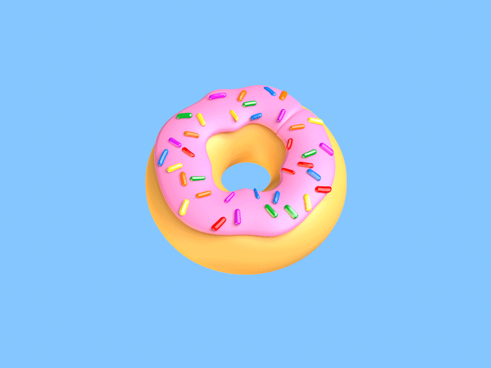
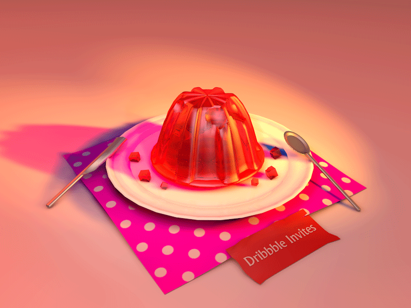

Leave a Reply
Astronauta...
-

Lo ví sembrando unas semillas brillantes, como si sembrara vidrios con forma de semillas pero eran semillas de lo que parece una aleación de metal con cristales púrpura
by @TinyLieutenant -

Villa Las Brujas es un lugar que según se murmura, se puede encontrar solo cuando preparas una fogata con maderas para veneno y conjuros de sombra negra porque ese tipo de fuego ilumina el bosque en la dirección correcta no conozco bien el lugar donde se debe realizar el fuego, y por cierto, a manera de nota cortita, lo intenté en varios lugares diferentes al que muestra el mapa pero no funciona en ninguno osea que no es una villa con multiples portales que puedas acceder desde planos multimendionales, simplemente no funciona, y llegar al lugar que esta establecido en el mapa es re difícil, tengo el mapa por si alguien quiere una copia
by @KarenDestiny -

En el desierto de Arizona hay una caverna sin techo, las personas dicen que si caes del canyon al suelo apareces ahí, pero hay como un efecto extraño porque cuando me arroje en paracaídas, ingresé a un atrapasueños y del atrapasueños salí a una torre en el centro del canyon, osea aparentemente no se puede llegar al piso pareciera como si la única forma de tocar el suelo fuera encontrando la entrada de la caverna, que por cierto se rumora es peligrosa porque esta llena de perros salvajes... alguna idea, alguien tiene tips??
@JewelMusicOnBehalfOfTinySergeant -

Es muy raro, en su momento pensé que se trataba de un Andrew atrapado dentro de algún atrapasueños así que pensé "pues, encontrar el atrapasueños y sacarlo de adentro mojando el atrapasueños con agua sagrada... y la hacemos corta" pero no entiendo si dispararle al atrapasueños incorrecto influya en el hecho de que los atrapasueños están ubicados en lugares específicos, y como no tenemos evidencia de que sea un atrapasueños o cualquier otra cosa, destruir los atrapasueños sería una mala idea porque una vez les disparas desaparecen y pareciera que pierden su efecto, pero, si después necesitamos los atrapasueños para algo no vamos a tener como recuperarlos y tampoco habremos recuperado a cualquier Andrew atrapado... tips??
@Jwliana -
yo creo que si alguien tiene evidencia de algún refugio sería bueno hacer multiples copias hay un rumor de un álbum de mega doll llamado "Sara Sucia Brujeria" sé de buena fuente que aún no lo ha grabado, pero en ese álbum podrían haber titulos útiles para descifrar porque en la escena de la piscina de niñas el se encuentra ENCERRADO PERO NO REFUGIADO como si estuviera recuperando energía, no necesariamente triste o afligido por algo
@YoAurista
Conjuros que Cortan como Tijeras
Vanessa Crystal Lips, iba a ser un álbum de 3 partes, pero solo se logró grabar la primera parte y no se logró recuperar las maquetas y bocetos de las otras dos partes, aparentemente un conjuro de posesión destruye las dos copias antes de que las escribiera... no se sabe si se logran recuperar o no. Las esferas del alma son un arma explosiva de mano, similar a una granada mucho mas pequeña y mas contundente, se guardan en una caja de madera pintada con un liquido aislante que impide la implosión de las esferas, de ese modo, bloqueas tu alma para restringir tus reacciones. Con relación a "Villa Las Brujas": bueno osea, yo pienso que karen destiny tiene razón si bien, no funciona como un plano multidimensional con diferentes ángulos de ingreso, para encontrar el portal que funciona, (asumiendo que ya sabes como encontrar el lugar en el mapa), hay que anticiparse, porque ese portal se puede abrir solo cuando uno de los hechizos que ocurren como reacción a un conjuro llamado "Fuerte Mala Noche" ocurre, es decir: "Fuerte Mala Noche" ocurre cuando bajo el agua hay movimiento, es muy fácil detectar movimiento bajo el agua, porque KarenDestiny tiene establecido un Atrapasueños llamado "Mirador de La Herradura" es un semi conjuro en el cual la persona que camina a través de esa parte del bosque, puede ver que está caminando sobre la grama del pasto, pero en realidad esta dando pasos al interior de un pantano que se hace cada vez mas profundo y a medida que la persona continua ingresando anochece más y más rapido Gracias a ella es muy fácil, detectar porque durante la noche todo está en silencio absoluto y si por casualidad alguien "camina con herraduras bajo sus pies" (herraduras son las piezas de acero que utilizan los toros y los caballos para pisar con fuerza cuando llevan carga en su espalda), es muy fácil de oír porque las herraduras hacen mucho ruido. Ergo, con relación al mirador de la herradura podríamos decir que en nuestro bosque extenso y espeso funciona bien, yo constantemente lo aplico, apuntando hacia el área de Arizona que da al mar, y cuando detecto movimiento mi alma expulsa el "Fuerte Malanoche", dándome así tiempo suficiente para encontrar el mapa y conducir hasta el área ubicada, una vez ahí todavía voy a tener tiempo suficiente para prender el fuego, ingresar y restaurar el valor de la paciencia sobre la superficie de la tierra, basta con tocar el piso con la mano y lentamente pronunciar la palabra "paciencia" y la tierra se suaviza y evita el movimiento telúrico que puede causar temblores en la superficie. Por favor jamás intenten llevar animales a ese lugar, los pueden herir, se sabe bien que son submarinos intentando derribar algo, pero curiosamente es muy fácil conversar con serpientes, pues, el lugar esta atestado de serpientes, muchas, asi, mas de cien serpientes, que pueden invertir la dirección de los misiles bajo el agua, en aproximadamente dos segundos, con un movimiento brusco de su cuerpo, parece como si las serpientes atacaran con la cola, y la cola fueran los misíles y cuando muerden el misíl impacta la nave que lo expulsó Es importante saber que la causa de las pesadillas en algunos casos es la replica del impacto, no el impacto mismo, es decir que cuando ocurre el impacto no se siente nada y por ende, cuando sientes la replica es importante no reaccionar, en vez de eso, tocas el piso con la palma de tu mano y le dices a la tierra "paciencia", tiene un efecto interesante, si lo haces muy tranquila, el efecto que ocurre es como si el agua borrara el misíl y causa que el misíl no sea disparado nunca. Con todo esto en mente vale la pena, intentar crear un infierno a base de enlaces que provengan del "Fuerte Mala Noche" tejidos en atrapsueños, un buen lugar para colgar estos atrapasueños es el bosque del aserradero
- Semillas de Villa Las Brujas
- Soy la Delicada, La Isla, el Centro del Canyon
- No se puede encerrar mi alma
- El Refugio del Alma
- Camino Abandonado
- Infierno
- Desnuda
- Triánuglos Cónicos con Gravedad Invertida
- Cielos Oscuros
- Enlaces Malignos